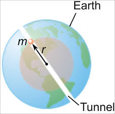
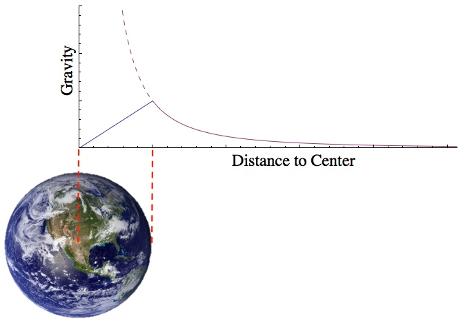

← Back to Concepts
Gravity Inside a Planet
1. Gravitational Force on the Surface of a Planet
We begin with Newton’s Law of Universal Gravitation:
\( F = \frac{G M m}{R^2} \)
This tells us the force between two masses: the planet (mass \( M \)) and an astronaut (mass \( m \)), separated by distance \( R \) from the planet’s center.
Step 1: Expressing the planet's mass using density
If we assume the planet has a uniform density \( \rho \), then the planet’s mass is:
\( M = \rho \cdot V = \rho \cdot \left( \frac{4}{3} \pi R^3 \right) \)
Step 2: Substituting into the force formula
Plug that into Newton's Law:
\( F = \frac{G \left( \frac{4}{3} \pi R^3 \rho \right) m}{R^2} \)
Simplifying:
\( F = \frac{4}{3} \pi G \rho R m \)
Final Surface Gravity Equation:
\( F_{\text{surface}} = \frac{4}{3} \pi G \rho R m \)
This is powerful: it means you can find the gravitational force **without knowing the total mass**—just the density and radius.
2. Gravity Below the Surface: Shell Theorem
Once underground, something surprising happens: only the mass below the astronaut contributes to gravity. The outer layers cancel out.
This is called the Shell Theorem.

Only the orange shaded region is providing the gravitational force. The mass above the object is NOT providing to the gravitational force
\( F = \frac{G M' m}{R'^2} \)
Where \( R' \) is the distance from the planet’s center, and \( M' \) is the mass of the inner sphere of radius \( R' \).
Step 1: Find the inner mass \( M' \)
\( M' = \rho \cdot \left( \frac{4}{3} \pi R'^3 \right) \)
Step 2: Sub into Newton’s Law
\( F = \frac{G \left( \frac{4}{3} \pi R'^3 \rho \right) m}{R'^2} = \frac{4}{3} \pi G \rho R' m \)
Key Insight:
Gravity decreases linearly as you move toward the center:

Gravitational Force increases linearly until the surface is reached. Then it exponentially decreases.
3. Gravitational Acceleration
Since \( F = m g \), we divide by mass \( m \) to get acceleration:
On the surface:
\( g = \frac{4}{3} \pi G \rho R \)
Inside the planet:
\( g = \frac{4}{3} \pi G \rho R' \)
4. Full Example Calculation
- Mass of astronaut: 150 kg
- Radius of planet: \( 3 \times 10^6 \, \text{m} \)
- Density: \( 7 \, \text{g/cm}^3 = 7000 \, \text{kg/m}^3 \)
Find surface gravity:
\( g = \frac{4}{3} \pi G \cdot 7000 \cdot 3 \times 10^6 \approx 21.99 \, \text{m/s}^2 \)
So the force on the astronaut is:
\( F = 150 \cdot 21.99 = 3298.5 \, \text{N} \)
5. What Happens If the Astronaut Falls Through a Tunnel?
If the astronaut jumps into a tunnel through the center of the planet, gravity acts like a spring:
\( F = -k R' \quad \text{(Simple Harmonic Motion)} \)
This means the astronaut oscillates back and forth through the planet in a straight line! We will get more into oscillations later in this unit
Oscillation Through a Planet Tunnel
Summary:
Gravity on the surface depends on planet radius and density. Inside a planet, gravity drops linearly with depth. The formula \( F = \frac{4}{3} \pi G \rho R m \) is powerful and arises directly from combining Newton's Law and the geometry of spheres.